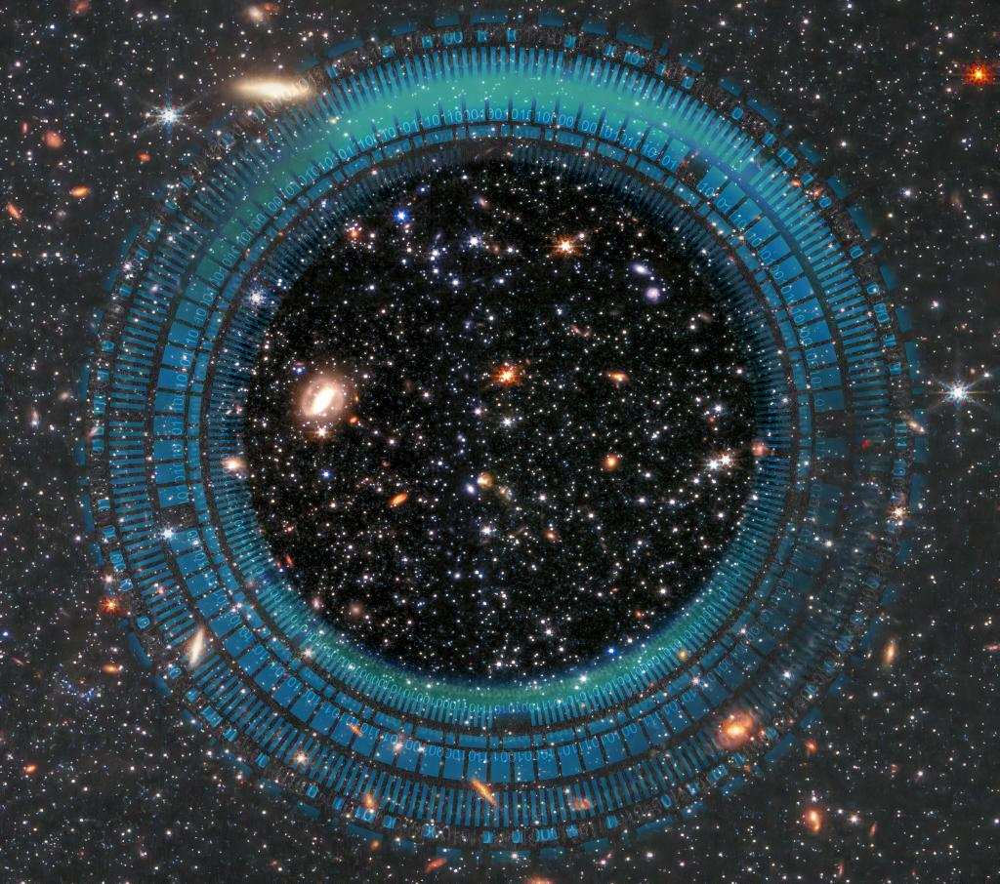

I am currently an Assistant Research Fellow (Postdoctoral Fellow) in the Department of Automation at Tsinghua University, working under the supervision of Professor Qionghai Dai. I received my Ph.D. in Information and Communication Engineering from Tsinghua University in 2024.
My research is dedicated to the advancement of Physics-informed AI for Science — a field aimed at dissolving the binary boundary between physical hardware and computational intelligence. By embedding fundamental physical laws directly into neural network architectures, I ensure high fidelity and scientific trustworthiness, even when operating under extreme conditions. Furthermore, by utilizing AI models to guide and inspire hardware design, I aim to transcend detection limits imposed by classical physics. This approach establishes a new paradigm for scientific discovery, designed to catalyze breakthroughs across complex domains, including optics, astronomy, and remote sensing.
In addition to my research, I serve as a reviewer for Nature, IEEE TCSVT, Optica, and Optics Express. I am also an Executive Editor for the special issue 'Intelligent Optical Astronomical Observation Technology' in Laser & Optoelectronics Progress.
🏆 Representative Publications

Deeper detection limits in astronomical imaging using self-supervised spatiotemporal denoising
We present ASTERIS, an astronomical self-supervised transformer-based denoising algorithm that integrates spatiotemporal information across exposures. ASTERIS improves detection limits by 1.0 magnitude at 90% completeness and purity, and identifies three times more high-redshift galaxy candidates in deep JWST images — equivalent to doubling the effective aperture.

Direct observation of atmospheric turbulence with a video-rate wide-field wavefront sensor
We develop a light-field-based wide-field wavefront sensor (WWS) achieving direct observation of atmospheric turbulence over 1,100 arcsec at 30 Hz, with turbulence dynamics prediction within 33 ms. Described by MIT Prof. Dirk Englund as the state-of-the-art real-time wavefront sensing chip.

An integrated imaging sensor for aberration-corrected 3D photography
ESI Highly Cited Paper
We propose a meta-imaging sensor achieving gigapixel photography with a single spherical lens, enabling multisite aberration correction across 1,000 arcseconds on an 80-cm ground-based telescope. Recognized as one of China's Top 10 Optical Breakthroughs.
🎖 Honors and Awards
- 2025 — Young Elite Scientists Sponsorship Program of the Beijing High Innovation Plan
- 2024 — Tsinghua University Shuimu Scholars
- 2024 — Outstanding Doctoral Dissertation, Chinese Institute of Electronics (CIE)
- 2024 — Beijing Outstanding Graduates
- 2024 — Tsinghua University Outstanding Doctoral Dissertation
- 2024 — Tsinghua University Academic Rising Star (Top 10 per year)
- 2023 — National Scholarship
- 2023 — ICBS Frontiers of Science Award
- 2023 — Top 10 Optical Breakthroughs in China
- 2023 — Best Oral Presentation Award, Graduate Forum of the Chinese Optical Society
- 2023 — Tsinghua University Future Leaders Scholarship
- 2023 — Tsinghua University First-Class School Scholarship
- 2022 — Tsinghua University Future Leaders Scholarship
📖 Educations & Employment
Dissertation: Digital adaptive Meta imaging · Advisors: Prof. Qionghai Dai & Prof. Lu Fang
Dissertation: Microwave photonics · Advisors: Prof. Kun Xu & Prof. Yitang Dai
💬 Invited Talks
📝 Other Publications
[Photonics Insights 2026] Computational imaging towards next-generation optical observational astronomy
Yuduo Guo, Peixin Weng, Hao Zhang, Chen Zhu, Jun Zhang, Jiamin Wu*, Qionghai Dai*
[Image and Vision Computing 2025] Hybrid Attention Transformers with fast Fourier convolution for light field image super-resolution
Zhicheng Ma, Yuduo Guo, Zhaoxiang Liu, Shiguo Lian, Sen Wan
[Cell 2024] Long-term mesoscale imaging of 3D intercellular dynamics across a mammalian organ
Yuanlong Zhang†, Mingrui Wang†, Qiyu Zhu†, Yuduo Guo, et al.
[Optica 2024] High-speed in toto 3D imaging with isotropic resolution by scanning light-field tomography
Yifan Chen†, Jiamin Wu†, Bo Xiong†, Zhi Lu, Yuduo Guo, et al.
Jiamin Wu†, Zhi Lu†, Dong Jiang†, Yuduo Guo, et al.
[Journal of Biomedical Optics 2022] Noise-robust phase-space deconvolution for light-field microscopy
Tianyi Zhu†, Yuduo Guo†, Yi Zhang, et al.
[PhotoniX 2022] Multi-focus light-field microscopy for high-speed large-volume imaging
Yi Zhang†, Yuling Wang†, Mingrui Wang, Yuduo Guo, et al.